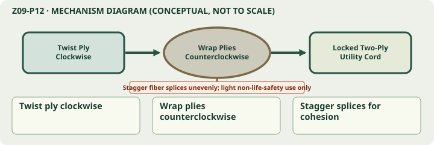

Z09-P12 · Tools and construction · Adapted historical material
Form a two-ply reverse-wrap cord from prepared dry fibers
Explain the counter-twist locking principle that turns loose plant fibers into a cohesive two-ply utility string.
When it applies · Supervised educational craft and emergency light-duty tying where lawful non-protected plant fibers are identified.
Equipment · Prepared pliable dry natural fibers (gathered lawfully without damaging live protected plants).

Actions
- Prepare uniform, flexible fiber strands free of stiff brittle woody core fragments so strands twist smoothly without kinking or snapping.[K09, K11, ED]
- Apply the reverse-wrap lock: twist one strand clockwise away from you while wrapping the pair counterclockwise over each other—the opposing torsional tension locks the two plies together so the cord does not untwist.[K09, K06, ED]
- Stagger fiber splices at uneven intervals rather than joining both plies at the same spot, avoiding a single abrupt weak point in the finished cord.[K09, ED]
Failure recognition · Twisting both strands and wrapping them in the same direction, causing the entire string to unravel immediately when released, or joining both splices side by side.[K09, ED]
Verify · Confirm the finished two-ply cord stays coiled tightly under light finger tension with evenly staggered splices and consistent diameter.[K09, ED]
Stop or change course · Keep hand-twisted natural cordage strictly for light utility ties or supervised training—never trust improvised fiber for overhead heavy loads or human suspension.[K09, K11]
Evidence and editorial notes
- K06 · NPS · Forces and Tools (current web edition)
- Section: Forces and Tools > Simple Machines and Mechanical Advantage · Conditions: Levers, wedges, inclined planes and friction mechanisms
Support: Simple machines trade force for distance (levers, wedges, pulleys); friction, alignment and material strength limit real-world output below ideal ratios.
Limitations: Ideal mechanical advantage ignores friction losses and breaking strength of ropes or anchors. · Conflicting evidence: None; clarifies physical trade-offs without implying engineered load ratings.
Editorial note: Anchors mechanical-advantage, wedge-splitting and pulley/rigging limit cards. · Specialist reviewer: Mechanical engineering and rigging safety
Primary source · checked 2026-11-24 - K09 · USDA Forest Service · Handtools for Trail Work (0523-2810-MTDC) (agency handbook)
- Section: Cordage, Anchors and Rigging Boundaries · Conditions: Non-life-safety camp lashing, tarps, haul lines and tie-downs
Support: Cordage strength drops significantly at knots, sharp bends, wet fibers, UV exposure and abrasion; inspect fibers before loading and never use unrated camp cord or improvised bindings for life-safety suspension or climbing.
Limitations: No universal breaking strength applies to natural plant fibers or weathered salvaged rope. · Conflicting evidence: Counters folklore claims equating improvised cordage to rated climbing rope.
Editorial note: Separates camp utility lashing/hauling from life-safety rigging. · Specialist reviewer: Rigging safety and materials mechanics
Primary source · checked 2026-11-24 - K11 · NPS · Leave No Trace Seven Principles (current web edition)
- Section: Principle 2 and 5 > Low-Impact Construction and Material Use · Conditions: Temporary camp craft and emergency construction on public lands
Support: Avoid cutting live saplings, nailing into live trees or building permanent structures on public lands; dismantle temporary non-destructive lashings and leave natural features intact.
Limitations: Life-safety emergencies differ from routine camp practice but still require hazard-free builds. · Conflicting evidence: Restricts destructive bushcraft construction in routine recreation.
Editorial note: Distinguishes lawful low-impact knots/lashings from destructive camp building. · Specialist reviewer: Land management and wilderness ethics
Primary source · checked 2026-11-24
Source lineage · B007A P02 and B010 P05 cordage; adapted historical material · Classification · Adapted historical material.